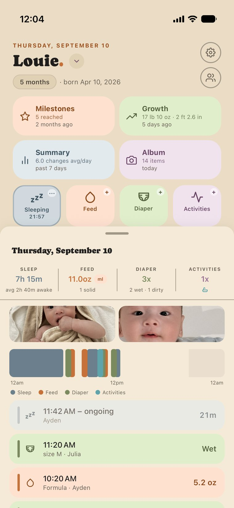
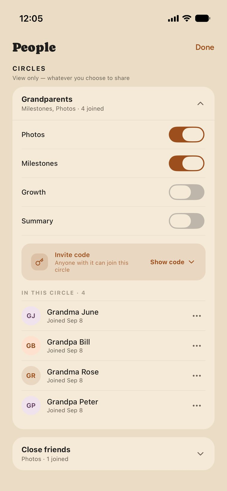
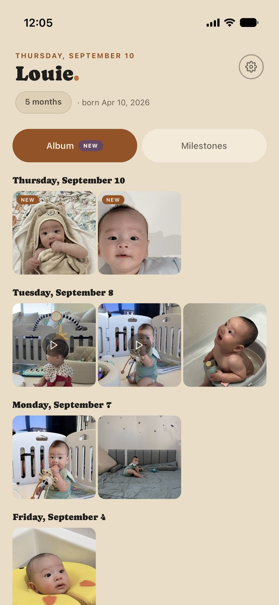

A shared care record
Every moment
of you
One live record of your child's day, written by the people caring for them — and an easy way to share the milestones, photos and videos with family and friends, while the rest of the day stays with you.
Not on the App Store or Google Play yet — ask us for an invite.
Started on the other phone at 3:58 PM. Either of you can end it.
Rolls front to back.
Typically 3–6 months — a reference range, not a deadline


Our story
We built this for the two of us first
In Louie's first weeks neither of us could remember which one of us had last fed him. Then came everyone else: an aunt asking for photos in one thread, friends in another, his grandparents on a call, the same video sent five times over and findable in none of them. No history, no order, and every new ask started from scratch.
Circles are our answer. The album and the milestone journal keep everything in one place and in order, and the people we invite can look through it and react or leave a comment right where it happened — instead of a photo scrolling away up a group chat. One record for us, one door outward for everyone else. He is the reason it exists, and the name is for him — every moment of you.
Ayden and Julia · Louie's parents

What it is
It takes a village to raise a child.
Let the village in.
The milestones, photos and videos go out to the family and friends you choose, and nothing else leaves the record. Underneath it, up to five people can write the day together — you, your partner, a nanny, whoever is helping. It is the same live record on every phone, so anyone can add an entry, fix someone else's time or end a running timer.
- Sleep
- Feeding
- Diaper
- Activities
Three people wrote this day, and one timer is still running. Any guardian or caregiver can tap a row to fix the time, the side or the amount.
The whole village, in on the good part
Milestones, photos and videos go out to circles you build — one for the grandparents, one for friends, one for everybody who keeps asking for pictures. They can look through them and react from their own phones.
Weight, height and a weekly summary — feed, diaper and sleep averages — can go out too. Nothing leaves the record until you switch it on, and you can switch it off again.
Guardians and caregivers write it together
Whoever is holding them writes it down, and any other guardian or caregiver can fix the time, change the side or end the timer from their own phone.
A nanny or a daycare joins as a caregiver: they log the day, and growth, milestones and sharing stay out of reach.
Who sees what
Everyone who helps sees as much as they need, and no more
Three kinds of people, and you decide who is which.
Guardians
You, and whoever you raise them with
The whole record is yours: the day as it happens, the parts worth keeping, and the say over who else sees any of it.
- Feeds, sleeps, diapers and activities
- Milestones to set and celebrate
- Photos, videos, comments and hearts
- Growth and the weekly summary
- Invite, remove or block anyone
Caregivers
A nanny, a sitter, daycare
A lighter version of the app, on purpose. Easy to use with both hands full, while the more personal pages stay with you.
- Feeds, sleeps, diapers and activities
- Growth stays with the guardians
- So do milestones and the album
- Nothing to share outward
Circle members
Family, friends, everyone asking
Four things can be shared with a circle, and you choose them for each circle:
- Grandparents circle can have all four
- Friends circle, just the album
- Growth and the summary start off
Everyone you did not invite — No public profile · no feed to discover · nothing shared by default
How it works
Three steps to set up. After that it is just your day.
-
1
Start your household
Add your child's name and birthday. That is the whole setup — the record starts empty and fills up as the day goes.
-
2
Invite whoever is caring for them
Send a six-character code, or let them scan it. A co-guardian arrives with the same rights you have; a nanny or a daycare arrives as a caregiver, logging the day and nothing more.
-
3
Open a circle
Make one circle for the grandparents, one for friends, one for everybody who keeps asking for photos — and choose what each one can see: the album, milestones, growth, the weekly summary, or just one of them. They see that, and only that, from their own phone.
On the phone
Three screens, three kinds of access

The day, live
A timer running on one phone is running on the other. Underneath, the month of days already logged, and today's totals along the bottom.

Who is in it
Guardians share the same rights, caregivers get their own invite code, and each circle sees only what you choose for it.

What a grandparent sees in their circle
Their whole screen: the parts you switched on for this circle, and nothing else.
Privacy
A child's day is not for sale
Everything below is true today. If it is not on this list, we are not promising it.
No ads. Ever.
We do not sell your data, and we do not share it with advertisers.
Nothing counting how you use the app
No analytics or behaviour-tracking tools are built into it.
No recordings of your screen
Screen recording is switched off, everywhere in the app.
No trackers from other companies
Nothing follows you around the internet because you use EMOY.
One exception, stated plainly: when the app crashes, a report goes to Sentry so we can fix what broke. It carries what went wrong, not who it happened to — no names, no photos, no entries from the record.
Questions
How many people can share one record?
Up to five people can log care in one household, in any mix you like: you and one partner, or three guardians and two caregivers, or five guardians. Guardians hold the whole record; caregivers log the day, and growth, milestones and the album stay with the guardians.
Circles sit outside that five and are not capped. Invite as many grandparents, aunts and friends as you want, into as many circles as you want — they read and react to what you share, and they never write to the record.
Which phones does it work on?
iPhone and Android, from the same record. One of you on each is the normal case, and the one we built for.
What happens to our record if we stop using it?
You can delete your account from inside the app, or ask us to do it — the record, the photos and the videos go with it. There is a page on this site that walks through both ways.
When can I get it?
It is in private beta with family testers, so there is no store listing yet. Email us and we will put you on the invite list — we will say when there is room rather than leaving you waiting.